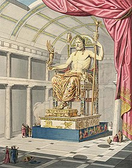

| The monumental Statue of Zeus at Olympia in Greece was one of the Seven Wonders of the Ancient World. Created in the 430s BCE under the supervision of the master Greek sculptor Phidias, the huge ivory and gold statue was bigger even than that of Athena in the Parthenon. Worshipped by pilgrims from across the Mediterranean, the statue inspired countless imitations and defined the standard representation of Zeus in Greek and Roman art in sculpture, on coins, pottery, and gemstones. Lost in later Roman times following its removal to Constantinople, Phidias' masterpiece captivated the ancient world for 1,000 years and was the must-see sight for anyone who attended the ancient Olympic Games.
Phidias, Master sculptor
The master sculptor and architect Phidias (also spelt Pheidias, active c. 465-425 BCE), who had already supervised construction of the Parthenon (447-432 BCE) in Athens and its giant statue of the city's patron goddess Athena, was called on again to produce a similarly monumental sculpture of Zeus. The location was to be Olympia in the western Peloponnese of Greece where a huge brand new temple awaited. It was there that, every four years, the Pan-Hellenic Olympic Games (776 BCE - 393 CE) were dedicated. Olympia was then controlled by the polis (city-state) of Elis and the sacred site attracted thousands of travellers, pilgrims, and sports fans from across the Mediterranean. The new cult statue and temple to house it would be fine additions, adding prestige to Olympia at a time when there were still rival games held at other sites such as Delphi, Nemea, and Isthmia near Corinth. In addition, a magnificent dedication to Zeus, father of the Olympian gods and supreme deity of the ancient Greek religion, could only be a positive for the Eleans' and indeed all of ancient Greece's spiritual and material well-being |  |